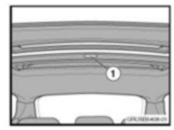
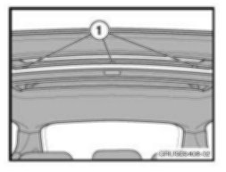
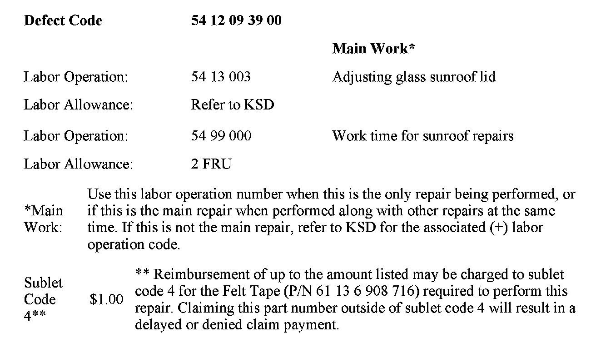

Body - Sunroof Rattles in Open Position
SI B54 05 08Special Roofs
March 2008
Technical Service
SUBJECT
Rattle from Panoramic Roof when Fully Open
MODEL
E83 (X3)
SITUATION
While driving with the panoramic roof fully open, a rattling noise can occasionally be heard from the rear of the roof opening. The noise is most pronounced when driving over rough roads or at high speeds.
CAUSE
Wind-induced vibration may cause the following:
1. The front sunroof glass panel contacts the bottom of the rear rain gutter.
2. The lower rear edge of the rear glass panel vibrates against the top of the rear rain gutter.
CORRECTION
Apply felt tape to the necessary locations.
PROCEDURE
1. Ensure proper adjustment of the sunroof panels per Repair Instruction RA 54 13 003. This will ensure that the correct spacing exists between the glass panels when the sunroof is open.

2. Visually inspect the underside of the rear rain gutter to determine whether a felt pad (1) is already present. If it is not present, place three 30mm pieces of felt tape front-to-back to create an approximately 30x50mm pad on the underside of the rear rain gutter.

3. Place the panoramic sunroof in the vented position. Cut 3 strips of felt tape to 20mm lengths. Each felt strip will be placed on the underside of the rear edge of the rear glass panel (1). Place a felt strip in the center of the panel lengthwise from front to back.Place each of the remaining felt strips towards the outside edges of the panel, approximately 30mm from each edge.
PARTS INFORMATION
WARRANTY INFORMATION

Covered under the terms of the BMW New Vehicle Limited Warranty.
Disclaimer